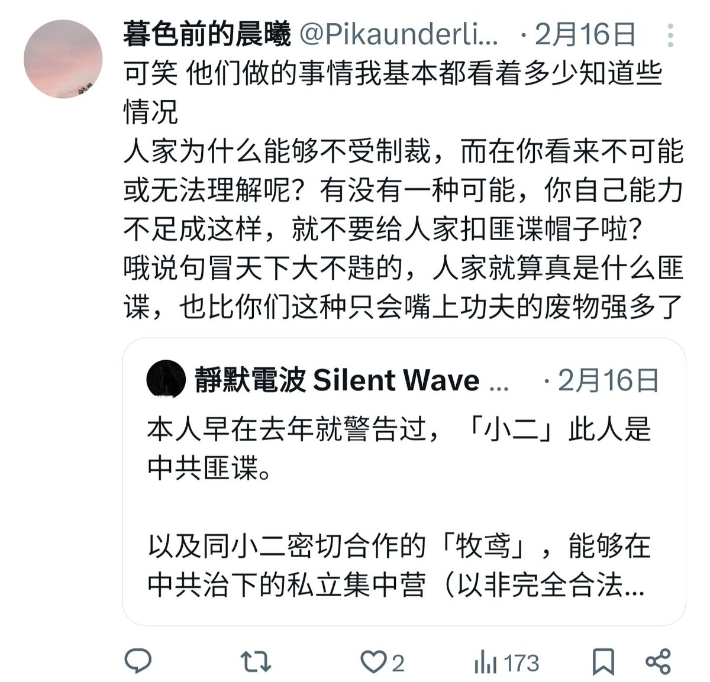
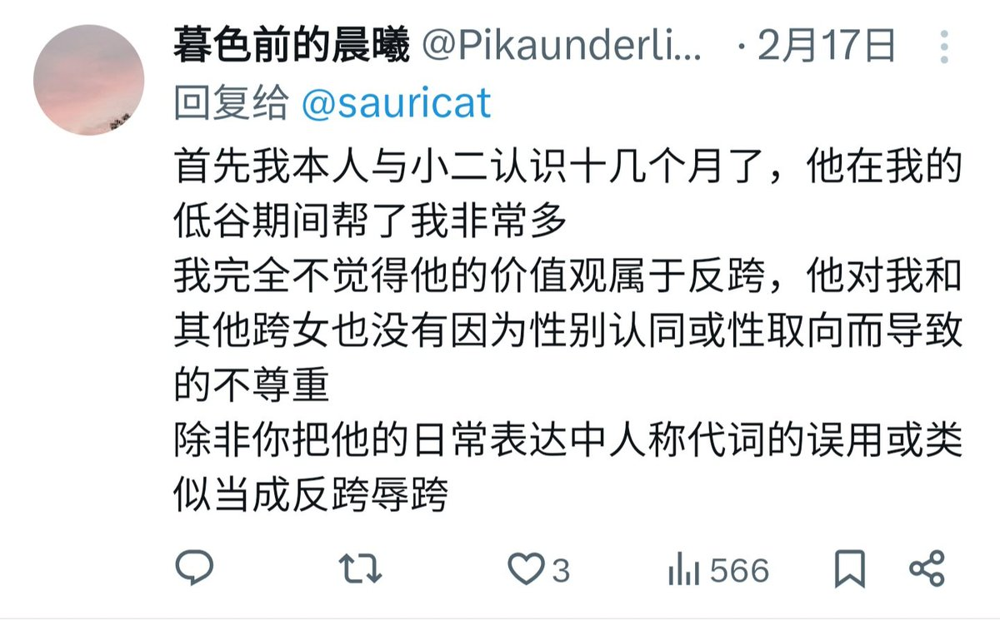
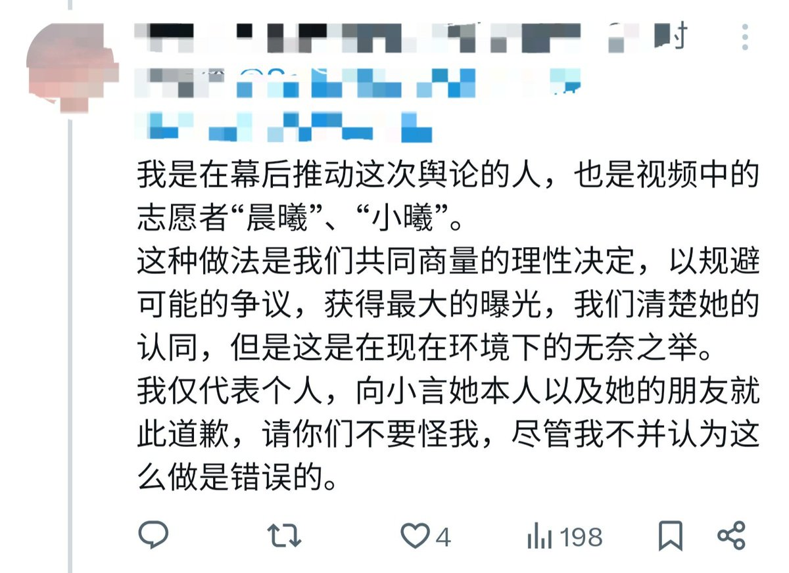
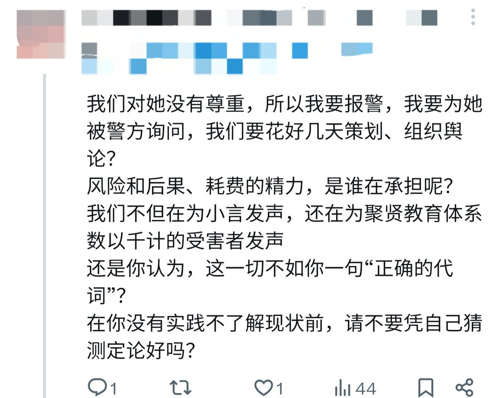

nonnun
@h191980276
我不打码了，你们都该下地狱




nonnun
@h191980276
此人曾声称小二不是中共间谍，并表示“【就算是中共间谍】，也比你们这种只会嘴上功夫的废物强多了”
此人曾以个人声誉担保小二不反跨，并表示misgender不算反跨 https://t.co/U8hDei2oP0 https://t.co/pfkWQ2cGqZ
nonnun
@h191980276
抢尸体，，，炮弹.....轰响戒网瘾学校，我不想死成这样.....我不想这么死.... https://t.co/HEFFnLzUev